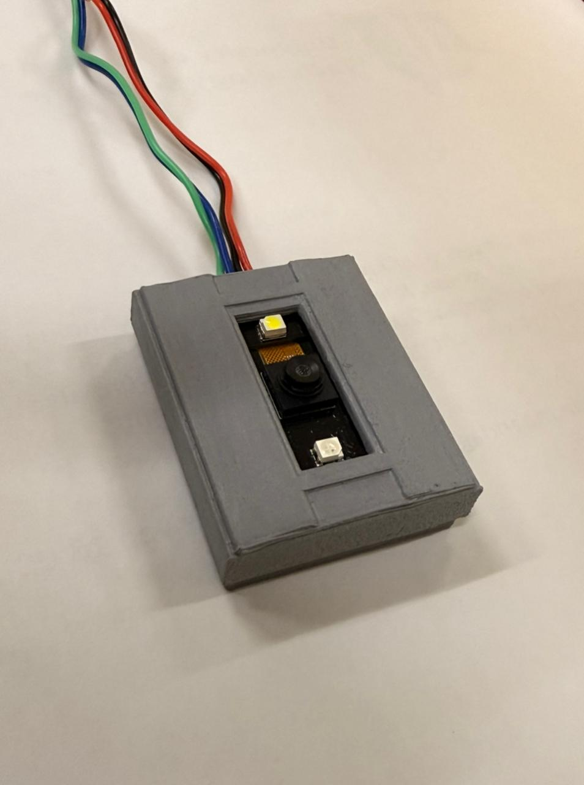
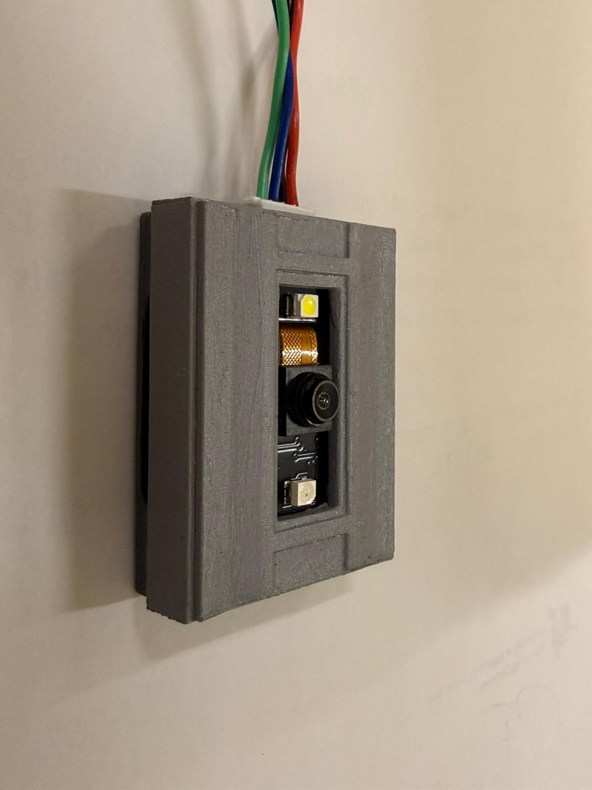

Prototype
We bouwden een eerste werkende opstelling met sensoren, bekabeling en ESP32-aansturing.
ESP32
Sensoren
Prototype
Project case study
In teamverband ontwikkelde ik een slimme lichtschakelaar die met handgebaren werkt via sensoren en een ESP32. Dit project laat zien hoe ik hardware en software combineer om een praktische oplossing te bouwen.

We bouwden een eerste werkende opstelling met sensoren, bekabeling en ESP32-aansturing.

Door te testen zagen we hoe afstand, timing en sensorwaarden invloed hadden op het schakelen.

Het eindresultaat reageert op handgebaren en toont hoe techniek dagelijkse handelingen slimmer kan maken.
Een normale lichtschakelaar vraagt fysiek contact. Wij wilden onderzoeken hoe licht contactloos bediend kan worden.
Met sensoren en een ESP32 maakten we een prototype dat handbewegingen detecteert en daarop reageert.
Ik werkte mee aan het testen, verbeteren en uitleggen van de technische werking binnen het team.
Ik leerde beter logisch denken, testen met echte hardware en samenwerken aan een technische oplossing.